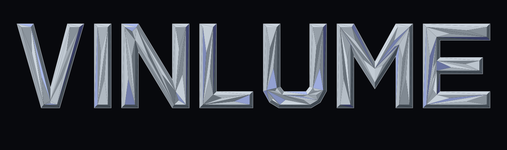

VINLUME DISK / PRISMATIC NOIR / 06
Laboratorio ópticoLa luz revela el material.
Compara los primeros estudios o abre Diamond para explorar sólidos 3D transparentes. Mueve el puntero sobre el cristal o dirige la luz con los controles. Ninguna demo está integrada al sitio.
01 / Cristal refractivo
Fallback estático disponible
Refracción RGB, reflexión Fresnel y caras ópticas con normales independientes. Entorno de estudio procedural, sin imágenes ni librerías externas.
Coste y diagnóstico de esta sesión
CPU indica tiempo de envío de dibujo, no tiempo GPU. La resolución baja si el envío supera 8 ms. Sin bucle en reposo; máximo 30 actualizaciones/s durante respuesta. El modo estático y movimiento reducido no inicializan WebGL.
MESA DE REFERENCIAS / ORIGINALES LOCALES
Evaluar el cristal, no el brillo.
Compara caras claras/oscuras, profundidad, separación espectral localizada y luz proyectada. Las fotografías son referencias ajenas; no forman parte del material renderizado.